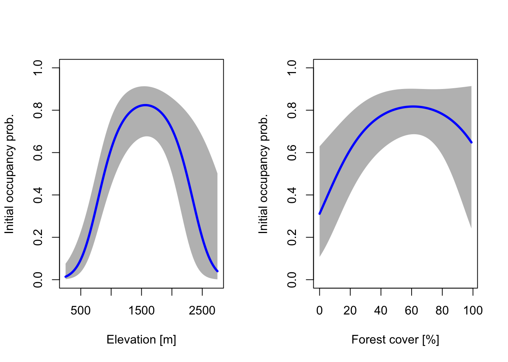
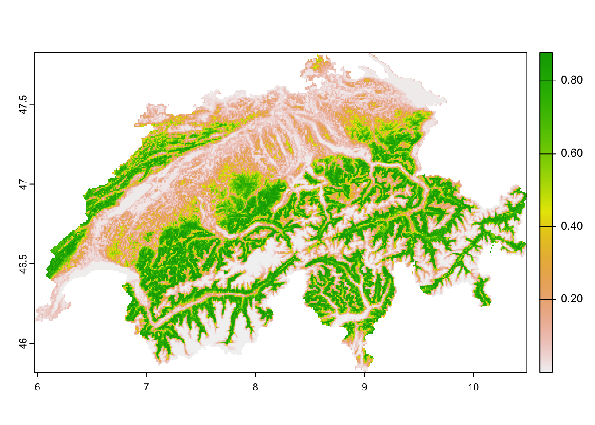
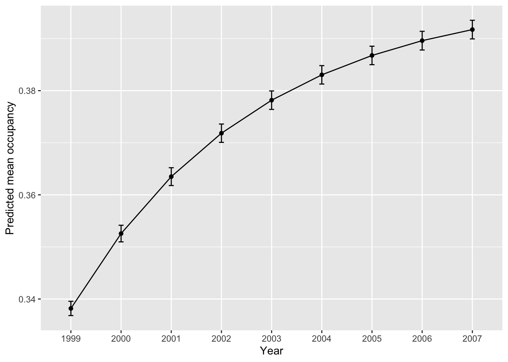
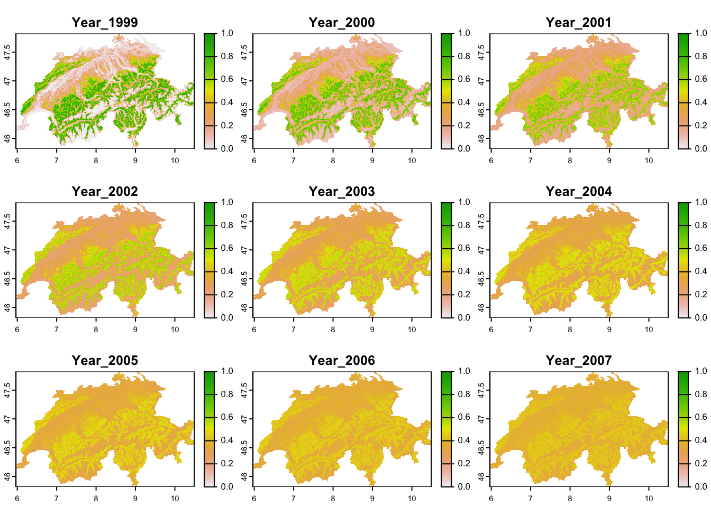

RStudio project
Open the RStudio project that we created in the previous session. I recommend to use this RStudio project for the entire module and within the RStudio project create separate R scripts for each session.
# Session Occ-6: Dynamic occupancy models and save the file
in your folder “scripts” within your project folder, e.g. as
“Occ6_DynamicOccModel.R”In this practical we turn to an extension of occupancy models to predicting changes in the occupancy status of sites across multiple seasons (years). Such range dynamics can be modelled using the so-called dynamic occupancy models (D. I. MacKenzie et al. 2003), also known as multiple-season occupancy models. Dynamic occupancy models explicitly model species colonisation of non-occupied sites and local extinctions at occupied sites (Kéry, Guillera-Arroita, and Lahoz-Monfort 2013; Briscoe et al. 2021), similar to classic metapopulation models (Hanski 1998). Occupancy or range dynamics over time are then simulated as a Markov process where the occupancy of a site is determined by the occupancy of the previous time step and the transition probability (colonisation probability of unoccupied sites and extinction probability of occupied sites). Additionally, dynamic occupancy models can explicitly consider imperfect detection as we already know from occupancy-detection models (D. MacKenzie et al. 2006) but can also be fitted without the observation process (Kéry and Royle 2021).
Similar to before, accounting for this imperfect detection requires a hierarchical model structure in which we separately describe the state process, here the occupancy \(z_{it}\) of a species at site \(i\) in year \(t\), and the observation process, here the probability \(y_{ijt}\) of observing a species at site \(i\) during survey \(j\) in year \(t\) if the species is indeed present.
Patch or site occupancy then depends on the initial occupancy \(\psi_{i1}\) and the colonisation and extinction probabilities. The occupancy probability at time \(t+1\) is given by:
\[\psi_{i,t+1} = (1-\psi_{it}) \cdot \gamma_i + \psi_{it} \cdot (1-\epsilon_i)\]
where a non-occupied site \((1-\psi_{it})\) can become occupied with probability of colonisation \(\gamma_i\) and an occupied site \(\psi_{it}\) will remain occupied with survival probability \((1-\epsilon_i)\) or go extinct with extinction probability \(\epsilon_i\). The probability to detect the species at an occupied site is \(p_{ijt}\). Four linked generalised linear models (GLMs) are used to describe these different states and processes (the initial occupancy \(\psi_{1}\), the probability of colonisation \(\gamma_i\), the probability of extinction \(\epsilon\) and the probability of detection \(p\)) and their relation to different site and survey covariates.
Similar to static occupancy models, dynamic occupancy models assume closure (meaning the occupancy state does not change between replicate surveys within one season) and no false positives (meaning no misidentification of the species).
In this practical, we are going to work with data from the Swiss
common breeding birds survey (MHB) that has been running since 1999.
Annual surveys are conducted in 267 sampling sites (1 km2
cells) with three visits each year (two above the treeline). Data on
repeated surveys per year during 1999-2007 are available for the red
crossbill within the package unmarked (Fiske and Chandler 2011) and this example has
also previously been used by unmarked vignettes to
illustrate dynamic occupancy modelling.
We load the data:
library(unmarked)
# Load data for the red crossbill
data("crossbill")
# Inspect data
head(crossbill)## id ele forest surveys det991 det992 det993 det001 det002 det003 det011
## 1 1 450 3 3 0 0 0 0 0 0 0
## 2 2 450 21 3 0 0 0 0 0 0 0
## 3 3 1050 32 3 NA NA NA 0 0 0 1
## 4 4 950 9 3 0 0 0 1 0 0 0
## 5 5 1150 35 3 0 0 0 1 1 1 0
## 6 6 550 2 3 NA NA NA 0 0 0 0
## det012 det013 det021 det022 det023 det031 det032 det033 det041 det042 det043
## 1 0 0 0 0 0 0 0 0 0 0 0
## 2 0 0 0 0 0 0 0 0 0 0 0
## 3 1 0 0 0 0 1 1 1 0 0 0
## 4 0 0 0 0 0 0 1 0 0 0 0
## 5 0 1 1 0 0 1 1 0 1 1 0
## 6 0 0 0 0 0 0 0 0 0 0 0
## det051 det052 det053 det061 det062 det063 det071 det072 det073 date991
## 1 0 0 0 0 0 0 0 0 0 34
## 2 0 0 0 0 0 0 0 0 0 17
## 3 0 0 0 0 0 1 0 1 0 NA
## 4 0 0 0 0 0 1 0 1 1 29
## 5 1 0 0 0 0 0 1 1 1 24
## 6 0 0 0 0 0 0 0 0 0 NA
## date992 date993 date001 date002 date003 date011 date012 date013 date021
## 1 59 65 33 48 68 30 54 76 29
## 2 33 65 22 50 66 14 28 61 13
## 3 NA NA 38 67 85 28 50 83 30
## 4 59 65 33 48 68 24 54 76 39
## 5 45 65 21 46 71 31 56 73 23
## 6 NA NA 22 35 72 27 55 80 28
## date022 date023 date031 date032 date033 date041 date042 date043 date051
## 1 58 73 24 49 76 28 51 74 35
## 2 39 62 18 40 68 23 38 59 20
## 3 47 74 26 55 87 25 60 95 24
## 4 61 77 31 62 76 24 54 74 22
## 5 44 71 16 44 70 22 48 69 28
## 6 56 73 24 51 60 27 55 64 27
## date052 date053 date061 date062 date063 date071 date072 date073
## 1 52 73 19 56 65 20 46 54
## 2 35 65 15 28 55 19 50 56
## 3 59 87 23 62 90 22 55 61
## 4 60 76 22 57 78 22 49 70
## 5 51 73 23 42 70 15 43 60
## 6 39 55 29 40 52 21 40 49The data frame contains three different types of variables:
Both the site covariates and the survey covariates contain
NA values. The unmarked package will
automatically remove these missing data during model fitting. To make
sure that the same number of records are removed when fitting different
candidate models, we set all observations to NA if site or
survey covariates are missing.
# Survey covariates, here only Date
Date <- as.matrix(crossbill[, 32:58])
# Observations / Detection histories
y.cross <- as.matrix(crossbill[, 5:31])
# Set all observations for which no survey covariate is available to NA
y.cross[is.na(Date) != is.na(y.cross)] <- NA
# Site covariates
siteCovs <- crossbill[, 2:3]In this example, we do not have any dynamic covariates that vary across years. We could still test whether the colonisation or extinction rates vary across time by using year as a dynamic “yearly” covariate.
# Yearly site covariates
year <- matrix(as.character(1999:2007), nrow(crossbill), 9, byrow = TRUE)As we already know from static occupancy-detection models, the numeric optimisation will stabilise more easily when the covariates are standardised.
# Standardise survey covariates, here only Date
Date <- scale(Date)
# Standardise site covariates
siteCovs <- scale(siteCovs)Finally, we construct an unmarkedMultFrame object that
is needed for the colext() function, which implements
dynamic occupancy models following D. I.
MacKenzie et al. (2003).
# Make unmarkedMultFrame for dynamic occupancy model
crossbill_umf <- unmarkedMultFrame(y = y.cross, # detection histories
siteCovs = data.frame(siteCovs), # (static) site covariates
yearlySiteCovs = list(year = year), # list of yearly (dynamic) site covariates
obsCovs = list(date = Date), # list of survey covariates
numPrimary = 9) # number of primary time periods (here, number of years)The simplest model is the null model where we estimate only
intercepts for the different parts of the model and thus assume that
these parameters are constant across the entire study region: the
initial occupancy \(\psi_{1}\), the
probability of colonisation \(\gamma_i\), the probability of extinction
\(\epsilon\) and the probability of
detection \(p\). For this, we will use
the function colext() in the unmarked package.
When you look up the help page ?colext you will see that
the function expects four different formulas for these four rates.
# Null model with only intercepts (assuming constant rates across study region)
dom_null <- colext(psiformula = ~1,
gammaformula = ~1,
epsilonformula = ~1,
pformula = ~1,
data = crossbill_umf)
# Inspect the fitted model:
dom_null##
## Call:
## colext(psiformula = ~1, gammaformula = ~1, epsilonformula = ~1,
## pformula = ~1, data = crossbill_umf)
##
## Initial:
## Estimate SE z P(>|z|)
## -0.794 0.154 -5.14 2.68e-07
##
## Colonization:
## Estimate SE z P(>|z|)
## -1.97 0.112 -17.6 4e-69
##
## Extinction:
## Estimate SE z P(>|z|)
## -1.57 0.153 -10.2 1.29e-24
##
## Detection:
## Estimate SE z P(>|z|)
## 0.0644 0.0564 1.14 0.254
##
## AIC: 5193.503The displayed output contains the estimates for the four states and process rates, and the AIC. As in static occupancy-detection models, all estimates are provided on the logit scale and we need to back transform them to get probability estimates between 0 and 1.
# Get the names of the estimated rates as stored in the model object:
names(dom_null)## [1] "psi" "col" "ext" "det"# Use above names to extract and back transform the estimates:
# Initial occupancy psi:
backTransform(dom_null, type="psi")## Backtransformed linear combination(s) of Initial estimate(s)
##
## Estimate SE LinComb (Intercept)
## 0.311 0.0331 -0.794 1
##
## Transformation: logistic# Colonisation rate gamma:
backTransform(dom_null, type="col")## Backtransformed linear combination(s) of Colonization estimate(s)
##
## Estimate SE LinComb (Intercept)
## 0.123 0.0121 -1.97 1
##
## Transformation: logistic# Extinction rate epsilon:
backTransform(dom_null, type="ext")## Backtransformed linear combination(s) of Extinction estimate(s)
##
## Estimate SE LinComb (Intercept)
## 0.172 0.0219 -1.57 1
##
## Transformation: logistic# Detection probability p:
backTransform(dom_null, type="det")## Backtransformed linear combination(s) of Detection estimate(s)
##
## Estimate SE LinComb (Intercept)
## 0.516 0.0141 0.0644 1
##
## Transformation: logisticWe can also get the confidence interval around these estimates.
# Detection probability p:
confint(backTransform(dom_null, type="det"))## 0.025 0.975
## 0.4884587 0.543623Results indicate that the crossbill has an initial occupancy of c. 0.3, meaning it is expected to occur in 30% of the study region, and has a detection probability of c. 0.5, meaning it can be observed with a 50% chance.
We can add covariates to all four states and process rates. However,
Kéry and Royle (2021) advice to add
covariates in a stepwise manner as the opimisation algorithm can easily
get stuck in local rather than global minima. They thus recommend,
additional to scaling the covariates, to fit the model in a forward
stepwise fashion progressively increasing model complexity while
monitoring the negative log-likelihood. The latter can be extracted from
the models using dom_null@negLogLike. It should decrease
with increasing model complexity, else it may indicate local minima.
Convergence could then be improved by varying the starting values for
the optimisation algorithm and increasing the number of iterations. For
more recommendations, take a look at chapter 4 of Kéry and Royle (2021).
Let’s fit a few - still comparably simple - models with covariates and then compare the models in terms of AIC. You will encounter longer computation times for more complex models.
# Let only colonisation vary by year (note that -1 removes the intercept for simpler presentation)
dom_1 <- colext(psiformula = ~ 1,
gammaformula = ~ year-1,
epsilonformula = ~ 1,
pformula = ~ 1,
data = crossbill_umf)
# Let only extinction vary by year
dom_2 <- colext(psiformula = ~ 1,
gammaformula = ~ 1,
epsilonformula = ~ year-1,
pformula = ~ 1,
data = crossbill_umf)
# Let only detection vary by year
dom_3 <- colext(psiformula = ~ 1,
gammaformula = ~ 1,
epsilonformula = ~ 1,
pformula = ~ year-1,
data = crossbill_umf)
# A fully time-dependent model
dom_4 <- colext(psiformula = ~ 1,
gammaformula = ~ year-1,
epsilonformula = ~ year-1,
pformula = ~ year-1,
data = crossbill_umf)
# Compare the different models with time-dependence
cand_models <- fitList(
'psi(.)gam(.)eps(.)p(.)' = dom_null,
'psi(.)gam(Y)eps(.)p(.)' = dom_1,
'psi(.)gam(.)eps(Y)p(.)' = dom_2,
'psi(.)gam(.)eps(.)p(Y)' = dom_3,
'psi(.)gam(Y)eps(Y)p(Y)' = dom_4)
(dom_sel <- modSel(cand_models))## nPars AIC delta AICwt cumltvWt
## psi(.)gam(.)eps(.)p(Y) 12 5111.31 0.00 1.0e+00 1.00
## psi(.)gam(Y)eps(Y)p(Y) 26 5127.63 16.31 2.9e-04 1.00
## psi(.)gam(Y)eps(.)p(.) 11 5179.09 67.77 1.9e-15 1.00
## psi(.)gam(.)eps(Y)p(.) 11 5191.13 79.82 4.7e-18 1.00
## psi(.)gam(.)eps(.)p(.) 4 5193.50 82.19 1.4e-18 1.00Clearly, the model with year-dependent detection (dom_3)
is the best. We will now start building up the initial occupancy
part.
# Keep time-dependent detection and build up initial occupancy
# Add linear term for elevation
dom_5 <- colext(psiformula = ~ ele,
gammaformula = ~ 1,
epsilonformula = ~ 1,
pformula = ~ year-1,
data = crossbill_umf)
# Add linear term for elevation and forest
dom_6 <- colext(psiformula = ~ ele + forest,
gammaformula = ~ 1,
epsilonformula = ~ 1,
pformula = ~ year-1,
data = crossbill_umf)
# Add linear and quadratic term for elevation
dom_7 <- colext(psiformula = ~ ele + I(ele^2) + forest,
gammaformula = ~ 1,
epsilonformula = ~ 1,
pformula = ~ year-1,
data = crossbill_umf)
# Add linear and quadratic term for elevation and forest
dom_8 <- colext(psiformula = ~ ele + I(ele^2) + forest + I(forest^2),
gammaformula = ~ 1,
epsilonformula = ~ 1,
pformula = ~ year-1,
data = crossbill_umf)
# Compare the different models with time-dependence
cand_models2 <- fitList(
'psi(.)gam(.)eps(.)p(.)' = dom_null,
'psi(.)gam(.)eps(.)p(Y)' = dom_3,
'psi(ele)gam(.)eps(.)p(Y)' = dom_5,
'psi(ele+forest)gam(.)eps(.)p(Y)' = dom_6,
'psi(ele+ele.sqr+forest)gam(.)eps(.)p(Y)' = dom_7,
'psi(ele+ele.sqr+forest+forest.sqr)gam(.)eps(.)p(Y)' = dom_8)
(dom_sel2 <- modSel(cand_models2))## nPars AIC delta AICwt
## psi(ele+ele.sqr+forest+forest.sqr)gam(.)eps(.)p(Y) 16 5026.94 0.00 7.6e-01
## psi(ele+ele.sqr+forest)gam(.)eps(.)p(Y) 15 5029.22 2.28 2.4e-01
## psi(ele+forest)gam(.)eps(.)p(Y) 14 5059.25 32.32 7.3e-08
## psi(ele)gam(.)eps(.)p(Y) 13 5099.60 72.67 1.3e-16
## psi(.)gam(.)eps(.)p(Y) 12 5111.31 84.38 3.6e-19
## psi(.)gam(.)eps(.)p(.) 4 5193.50 166.57 5.1e-37
## cumltvWt
## psi(ele+ele.sqr+forest+forest.sqr)gam(.)eps(.)p(Y) 0.76
## psi(ele+ele.sqr+forest)gam(.)eps(.)p(Y) 1.00
## psi(ele+forest)gam(.)eps(.)p(Y) 1.00
## psi(ele)gam(.)eps(.)p(Y) 1.00
## psi(.)gam(.)eps(.)p(Y) 1.00
## psi(.)gam(.)eps(.)p(.) 1.00It seems the full model for initial occupancy is the best model. We would now proceed with this model and start building up colonisation, then extinction, and finally detection. But for simplicity, let’s move on to model assessment.
We can visualise the modelled response for each of the four processes. We start by plotting the partial reponse curves for initial occupancy.
# Create covariate gradients (at original scale):
grad.ele <- seq(min(crossbill$ele), max(crossbill$ele), length=100)
grad.forest <- seq(min(crossbill$forest), max(crossbill$forest), length=100)
# Standardise them using the stored means and sd of our data
grad.ele.scaled <- scale(grad.ele, center=mean(crossbill$ele), scale=sd(crossbill$ele))
grad.forest.scaled <- scale(grad.forest, center=mean(crossbill$forest), scale=sd(crossbill$forest))
# Make prediction of initial occupancy - predictions are done separately for each gradient, while the other covariate is kept constant at their mean (mean=0 as the covariates were standardised)
dummyData <- data.frame(ele=grad.ele.scaled, forest=0)
pred.psi.ele <- predict(dom_8, type="psi", newdata=dummyData, appendData=TRUE)
dummyData <- data.frame(ele=0, forest=grad.forest.scaled)
pred.psi.forest <- predict(dom_8, type="psi", newdata=dummyData, appendData=TRUE)
# Plot the response curves for initial occupancy probability along the two gradients:
par(mfrow = c(1,2))
plot(pred.psi.ele[[1]] ~ grad.ele, type = "n", ylim = c(0,1), ylab = "Initial occupancy prob.", xlab = "Elevation [m]")
polygon(c(grad.ele,rev(grad.ele)), c(pred.psi.ele[,3],rev(pred.psi.ele[,4])), col='grey', border=NA)
lines(pred.psi.ele[[1]] ~ grad.ele, lwd=3, col='blue')
# plot the response curves for occupancy probability along cropland gradient:
plot(pred.psi.forest[[1]] ~ grad.forest, type = "n", ylim = c(0,1), ylab = "Initial occupancy prob.", xlab = "Forest cover [%]")
polygon(c(grad.forest,rev(grad.forest)), c(pred.psi.forest[,3],rev(pred.psi.forest[,4])), col='grey', border=NA)
lines(pred.psi.forest[[1]] ~ grad.forest, lwd=3, col='blue')
To test how well the model fits the data, we can use an extension of
the goodness-of-fit test by D. I. MacKenzie and
Bailey (2004). Conveniently, this is also implemented in the
mb.gof.test() function in the package
AICcmodavg (Mazerolle 2023).
Remember that it is recommended to simulate at least 1000 bootstrap
samples, but this can take quite long. For illustrative purposes you
could again reduce the number of bootstrap samples (set by using
argument nsim).
library(AICcmodavg)# perform bootstrapped GoF-test
(gof.results <- mb.gof.test(dom_8, nsim=1000))##
## Goodness-of-fit for dynamic occupancy model
##
## Number of seasons: 9
##
## Chi-square statistic:
## Season 1 Season 2 Season 3 Season 4 Season 5 Season 6 Season 7 Season 8
## 28.0624 17.9722 75.9222 28.4517 34.6810 36.3121 29.9120 34.1002
## Season 9
## 41.8516
##
## Total chi-square = 327.2655
## Number of bootstrap samples = 1000
## P-value = 0
##
## Quantiles of bootstrapped statistics:
## 0% 25% 50% 75% 100%
## 45 68 76 85 135
##
## Estimate of c-hat = 4.25The p-value indicates the probability of the null hypothesis that there is no lack of fit and thus no major differences between expected and observed frequencies. A value \(p≤0.05\) would indicate a lack-of-fit of the model.
As we can see from the model output, the model has a severe lack-of-fit. The \(\hat{c}>4\) (c-hat) indicates that we should not trust the model but should rather try to further improve it, for example, by adding covariates to better explain the variance in the data. For simplicity, we will still continue working with this model to also illustrate the prediction step.
Predictive accuracy of these models to independent data (new times or new places) is rarely assessed. In principle, we could use discrimination measures to quantify how well our model predicts observed presences and absences of independent data. For example, Briscoe et al. (2021) collated all detection/non-detections across repeated surveys to naïve occupancy estimates and then assessed disrimination ability of the models. Such discrimination measures are typically used in correlative species distribution models (SDM). Yet, we have to keep in mind for interpretation that occupancy is a hidden process and our presence/absence observations are the outcome or combined effect of occupancy and detection. Here, we are not learning any additional discrimination measures. If you are interested in these, we recommend to look into SDM literature (e.g. Guisan, Thuiller, and Zimmermann 2017) or at our SDM tutorials (e.g. here).
We have already used the generic predict() function
above to predict initial occupancy. We can do the same for predicting
the colonisation and extinction rates as well as detection probabilities
in the different locations and years, given the covariates (Kéry, Guillera-Arroita, and Lahoz-Monfort
2013). While such information is useful, it does not yet offer an
estimate of occupancy for each year of the time series. To obtain
occupancy estimates for the remaining years, we have to run simulations
(Briscoe et al. 2021), which we will see
at the end of this practical.
We want to map the modelled response in space and for this need to
first prepare the geographic layers. In practical Occ-3, we have already
learned how to obtain elevation maps and tree cover maps with the
geodata package.
## terra 1.7.29library(geodata)
library(terra)
# Let's first find out which country code Switzerland has
grep('Switzerland',geodata::country_codes()$NAME)
geodata::country_codes()[grep('Switzerland',geodata::country_codes()$NAME),]
# Get elevation data for Switzerland
elev_CHE <- geodata::elevation_30s(country='CHE', path='data', mask=T)
# Get tree cover data (we need it in percent!) and crop to Switzerland
forest_CHE <- geodata::landcover(var='trees', path='data', download=F)*100
forest_CHE <- terra::crop(forest_CHE, elev_CHE)
forest_CHE <- terra::mask(forest_CHE, elev_CHE)Now we can make predictions and map our different responses: the
initial occupancy \(\psi_{1}\), the
probability of colonisation \(\gamma_i\), the probability of extinction
\(\epsilon\) and the probability of
detection \(p\). In our model
dom_8, only the initial occupancy varies across space, we
restrict mapping to this process. We still compute also the predictions
of \(\gamma\) and \(\epsilon\) at each site (Note that we did
not include time-dependence in these submodels). These predictions are
needed for later simulations of occupancy across time. We do not need
predictions of detection probability for these simulations. As detection
probability did not vary across space in our model dom_8,
we do not map it either.
# Prepare data frame with all site covariates
CHE_env <- data.frame(crds(elev_CHE),as.points(elev_CHE),as.points(forest_CHE))
names(CHE_env)[3:4] <- c('ele', 'forest')
# Scale the data
CHE_env$ele <- scale(CHE_env$ele, center=mean(crossbill$ele), scale=sd(crossbill$ele))
CHE_env$forest <- scale(CHE_env$forest, center=mean(crossbill$forest), scale=sd(crossbill$forest))
# Predict initial occupancy probability per site
psi1 <- predict(dom_8, type="psi", newdata=CHE_env, appendData=TRUE)
plot(terra::rast(psi1[,c('x','y','Predicted')], type='xyz', crs=crs(elev_CHE)))
psi1_pred <- psi1$Predicted
# Predict colonisation probability per site
col <- predict(dom_8, type="col", newdata=CHE_env, appendData=TRUE)
col_pred <- col$Predicted
# Predict extinction probability per site
ext <- predict(dom_8, type="ext", newdata=CHE_env, appendData=TRUE)
ext_pred <- ext$PredictedFor simulating occupancy, we need the spatial and temporal predictions from above. Based on these, we first draw the initial occurrence state of each site from Bernoulli trials using the initial occupancy probability. Then, we calculate the occupancy probability at time \(t+1\) using the function we have seen earlier:
\[\psi_{i,t+1} = (1-\psi_{it}) \cdot \gamma_i + \psi_{it} \cdot (1-\epsilon_i)\]
Once we know the occupancy probability at time \(t+1\), we can then draw the occurrence state of each site at time \(t+1\) from a Bernoulli trial. We do this for all subsequent time steps and repeat the procedure e.g. 1000 times or more. For simplicity and illustrative purposes, you can again reduce the number of simulations.
# Set number of stochastic simulations to run:
nsim <- 1000
# Number of sites
nsites <- nrow(CHE_env)
# Number of primary seasons
nyears <- crossbill_umf@numPrimary
# Create empty list to store the simulated occupancy states
Zs <- list()
# Creat empty matrix to store mean occupancy
prev_sim <- matrix(NA, nsim, nyears)
# Loop through the number of simulations and compute occupancy
for (nn in seq_len(nsim)){
# Create empty matrix to store occupancy for the current simulation
Z <- matrix(NA, nsites, nyears)
# Draw initial occupancy state from Bernoulli trial
Z[,1] <- rbinom(nsites,1,psi1_pred)
# Loop through subsequent years
for (yy in 2:nyears) {
# Compute occupancy probability based on colonisation and extinction probabilities and occupancy from previous year
# Remember that our col and ext are constant over time, which may not always be the case
occ_prob <- Z[,yy-1]*(1-ext_pred)+(1-Z[,yy-1])*col_pred
# Draw occupancy state from Bernoulli trial
Z[,yy] <- rbinom(nsites,1,occ_prob)
}
# Store results
Zs[[nn]] <- Z
prev_sim[nn,] <- colMeans(Z)
}Finally, from the simulation results, we plot the predicted change in mean occupancy (prevalence) over time and map the predicted mean occupancy in each year.
# Summarise the mean occupancy (prevalence) over time:
mean_prev <- data.frame(year=as.character(1999:2007), mean_prev=colMeans(prev_sim), sd_prev=apply(prev_sim,2,sd))
# Plot mean occupancy (prevalence) and sd:
library(ggplot2)
ggplot(mean_prev, aes(x=year, y=mean_prev, group=1)) +
geom_errorbar(aes(ymin=mean_prev-sd_prev, ymax=mean_prev+sd_prev), width=.1) +
geom_line() +
geom_point() +
xlab("Year") + ylab("Predicted mean occupancy")
We see that our mean occupancy is increasing over time. Next, we want to map the mean predicted occupancy per year.
# Calculate mean occupancy per cell over all simulations
Zs_mean <- Reduce('+',Zs)/nsim
# Convert to data frame and rename columns
Zs_mean <- data.frame(Zs_mean)
names(Zs_mean) <- paste0('Year_',(1999:2007))
# Merge with spatial information
Zs_mean <- data.frame(CHE_env[,1:2], Zs_mean)# Convert to SpatRaster
r_Zs_mean <- terra::rast(Zs_mean, type='xyz', crs=crs(elev_CHE))
# Map predicted mean occupancy
library(raster)
raster::spplot(r_Zs_mean)
Don’t forget to save your results.
save(Zs,Zs_mean,prev_sim,file='results/dynocc_sim1000.RData')We see that local mean occupancy actually decreases over time and the spatial occupancy patterns seem to become more blurred. This is not unexpected as we haven’t yet included any covariates to our colonisation and extinction models and thus each site as equal colonisation and extinction probabilities. As our GoF-test indicated, our model seems to be missing important covariate information and we would thus re-initiate the modelling cycle to further improve the model.
Exercise: